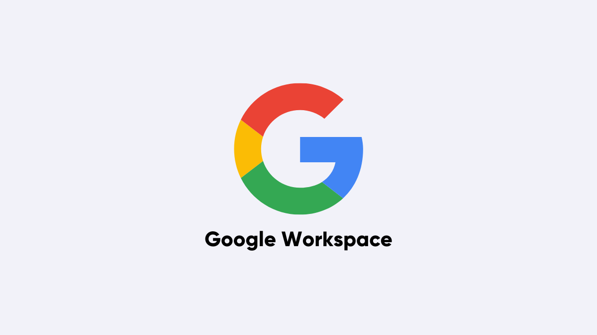

Início dos Estudos e Avaliação de Soluções
Escolha fundamentada em análise comparativa com as maiores empresas do segmento.
2025
Estudos Técnicos
Levantamento de requisitos institucionais
Fase 2
Avaliação de Mercado
Benchmarking de soluções disponíveis
Fase 3
Reuniões com Fornecedores
Microsoft e Google presencialmente
Definição
Microsoft 365 E1
Melhor aderência às necessidades da Codevasf
Selecionada & Homologada
Microsoft
Microsoft 365 E1
Avaliado

Google Workspace
"Esse projeto começou ainda em 2025, quando iniciamos os estudos e convidamos para reuniões presenciais as
duas maiores empresas desse segmento: Microsoft e Google."
Construção Colaborativa da Solução
Uma decisão construída com a participação de todas as áreas da Companhia.
Diretoria Executiva
Visão estratégica & recursos
Gerências (AA / GTI)
Gestão & acompanhamento
Equipes Técnicas
Arquitetura em nuvem
Usuários & Regionais
Usabilidade & rotina
"Foram diversas reuniões envolvendo diretorias, gerências e equipes técnicas, sempre buscando a melhor solução
para a Companhia."
Transformação Digital da Codevasf
Criando novas formas de trabalhar, colaborar e compartilhar conhecimento entre a Sede e todas as Superintendências Regionais.
"Transformação digital para conectar pessoas e fortalecer a missão da Codevasf."
☁️
Nuvem Microsoft
🤝
Colaboração
🔒
Segurança
🚀
Inovação

"Estamos dando mais um passo na transformação digital da Codevasf, criando novas formas de trabalhar,
colaborar e compartilhar conhecimento. Muito obrigado!"